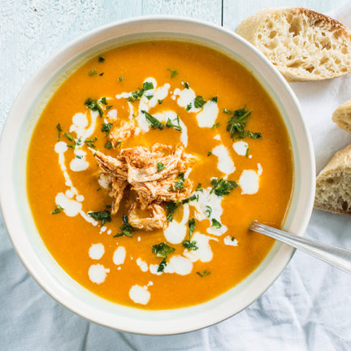

Lekkere Soep

Super Soepje! Ziet dat er niet jammie uit? Hihi!
Wanneer het buiten koud en donker is, de mensen om je heen alleen maar depressieve praat uitslaan en alles stom lijkt, is het tijd voor een super soepje.
Deze soep is makkelijk en snel te bereiden en maakt dat je je snel weer beter voelt!
Ingredienten:
- 6 kilo Aardappels
- 1 kilo Appels (Jonagold of Golden Delicious)
- 1 kilo Winterpenen
- 250 gram AH Soepgroenten
- 600 gram Peterselie
- 200 gram Zout
- 200 gram Rietsuiker
Bereidingswijze:
- Schild die aardappels en kook ze in 6 liter water gaar, snijd de aardappels vervolgens in blokjes van 3 bij 3 centimer groot en mieter ze in de pan waarin je de soep gaat bereiden.
- Snijd net als de aardappels de appels en winterpenen in blokjes van 3 bij 3 centimeter en voeg deze ook toe aan de pan.
- Lekker bezig! Ben je moe. Neem dan tussendoor een pauze van zo'n 10 minuten. Gooi vervolgens de overige ingredienten in de pan.
- Voeg nu 10 liter water toe en kook het geheel in 4uur tijd tot een stevige soep.
- Serveer de soep in grote kommen en garneer desgewenst met een restje rietsuiker.
- Geniet van je super soep! Zeker weten dat jij je na het eten van deze beste maaltijd een stuk beter voelt!